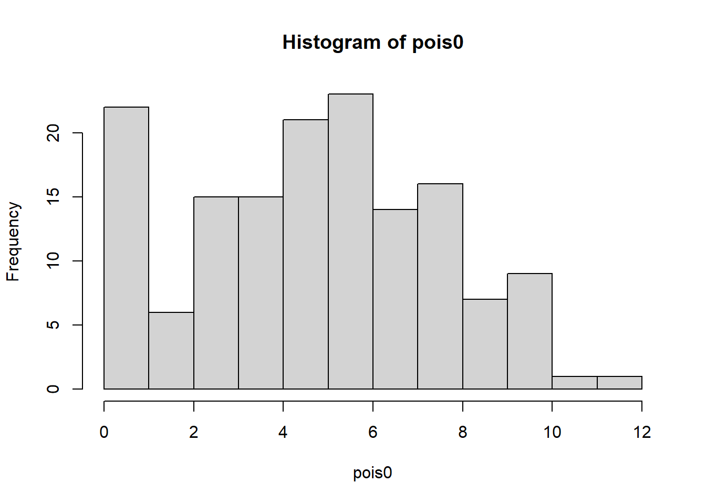
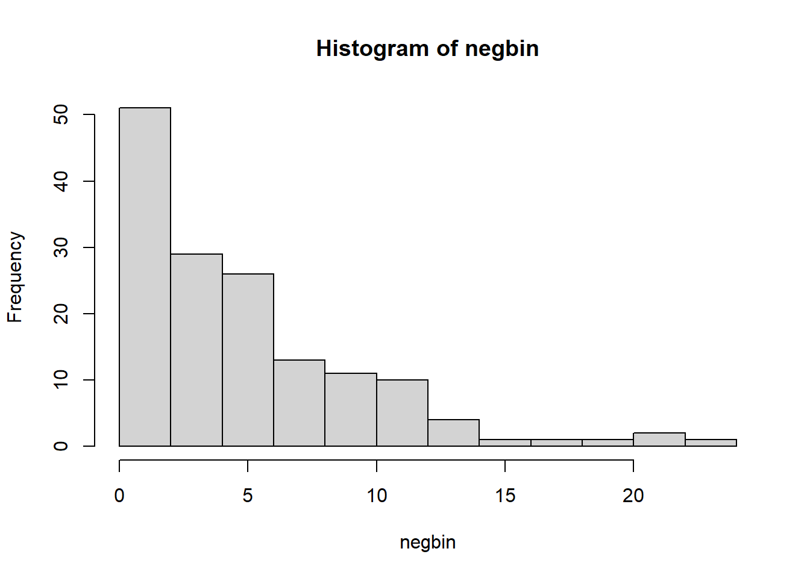
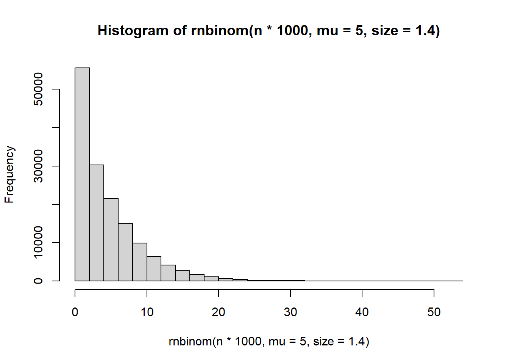
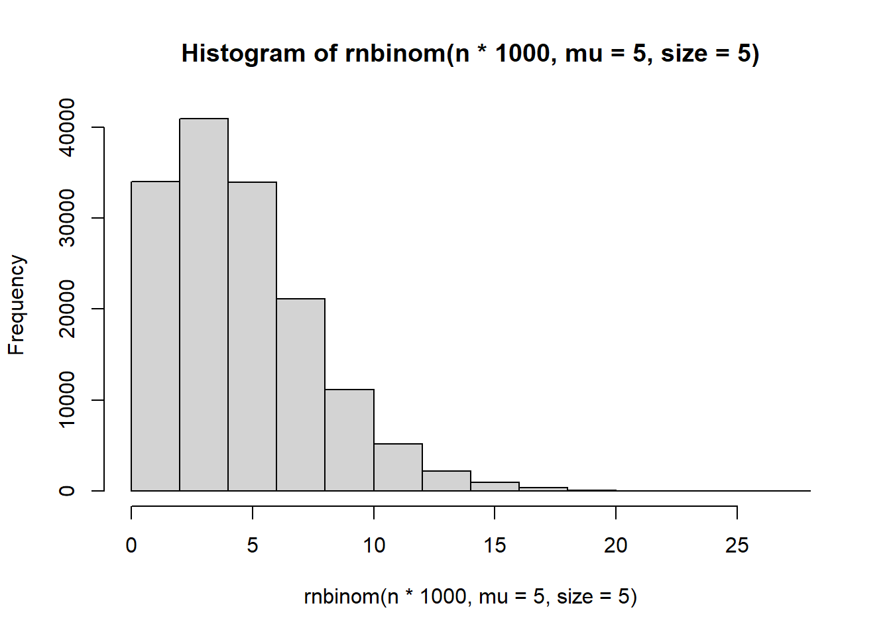
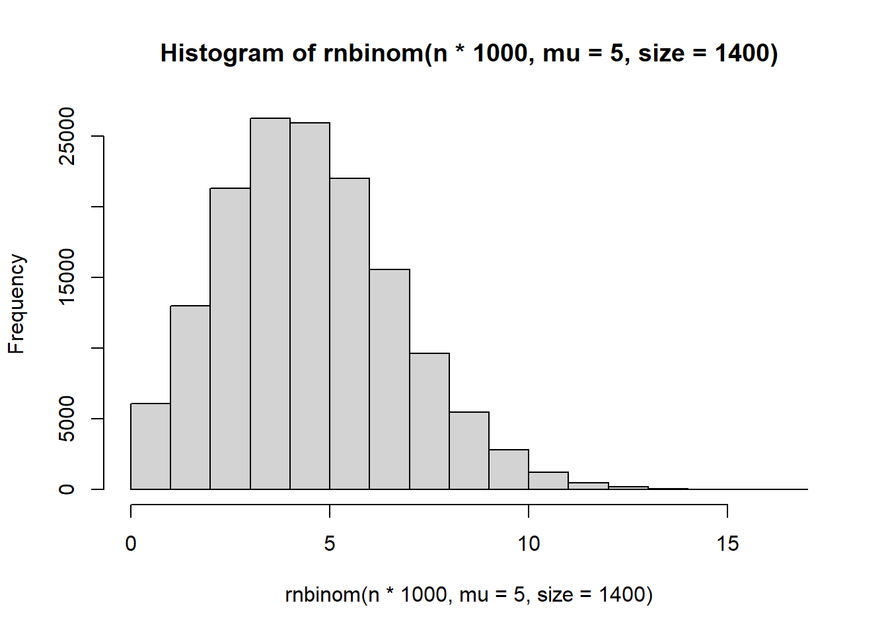
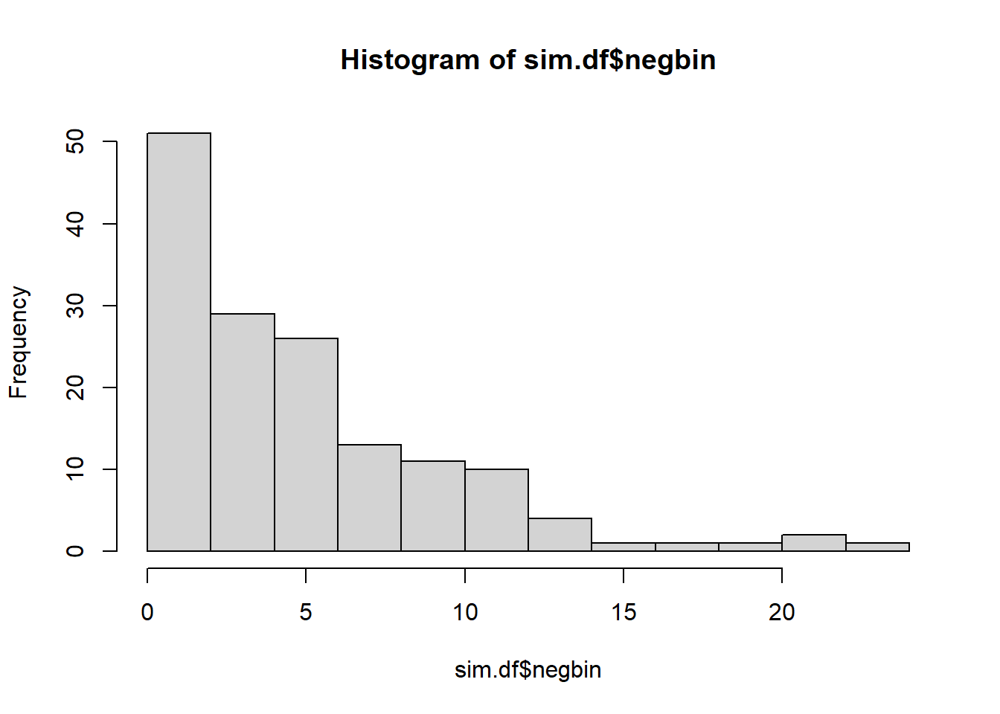
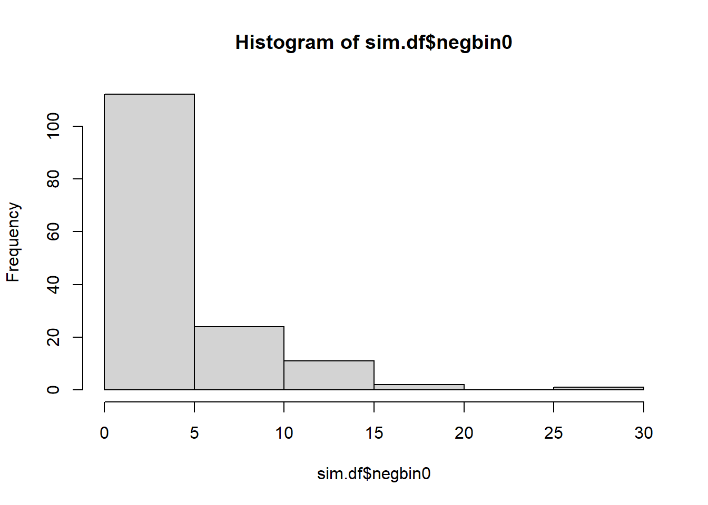

library(arm)
library(Sleuth3)
library(tidyverse)
library(vcdExtra)
library(magrittr)
library(MASS)
library(pscl)
library(VGAM)6 Zero Inflation
Zero-Inflation
Please load these libraries that you’ll need for this lab:
In this lab, we’ll cover some more details about zero-inflated and hurdle models. We will discuss why zero-inflated models are sometimes needed, the difference between zero-inflated models and hurdle models, how to compare various types of fitted models, and how to check residuals to assess model assumptions.
Quine Data
We will use data from schools in Australia about the number of days that children are absent from a particular school in the MASS library.
Some data exploration
# ?quine
schools <- quine
head(schools)| Eth | Sex | Age | Lrn | Days |
|---|---|---|---|---|
| A | M | F0 | SL | 2 |
| A | M | F0 | SL | 11 |
| A | M | F0 | SL | 14 |
| A | M | F0 | AL | 5 |
| A | M | F0 | AL | 5 |
| A | M | F0 | AL | 13 |
For each child in the data set, we have information on the child’s Ethnicity, Sex, Age, Learning Disability Status, and Days absent from school (which we will treat as the response variable). All of the explanatory variables are categorical with two categories each, except for Age which has four categories.
We’ll start with some exploration of the data.
ggplot(data = schools, aes(x = Days, y = after_stat(density))) +
geom_histogram(bins = 12, colour = "black", fill = "white") +
ggtitle("Days Absent from School")You can see from the histogram above that most of the children only missed between 5 and 10 days of school. However, there are perhaps more 0’s than we would expect from a standard Poisson or Negative Binomial Model. It’s rather difficult to tell what will be the best model for these data just based on this simple histogram, but we will investigate the various models proposed in lecture throughout the rest of the lab.
Next, let’s next create some side-by-side boxplots to explore how each of the categorical explanatory variables is associated with the response.
ggplot(data = schools, aes(x = Eth, y = Days)) +
geom_boxplot() +
ggtitle("Days Absent vs. Ethnicity") +
scale_x_discrete(labels = c("Aboriginal", "Not Aboriginal"))Here is looks like there are generally higher numbers of days absent among the Aboriginal students, and there’s also more variability in that group.
ggplot(data = schools, aes(x = Sex, y = Days)) +
geom_boxplot() +
ggtitle("Days Absent vs. Gender") +
scale_x_discrete(labels = c("Female", "Male"))It’s difficult to detect large differences here, though there is some indication of more variation in the distribution of male students.
ggplot(data = schools, aes(x = Age, y = Days)) +
geom_boxplot() +
ggtitle("Days Absent vs. Age") +
scale_x_discrete(labels = c("Primary", "F1", "F2", "F3"))There seems to be some skewness in the F1 distribution, and you could investigate that further by cross-tabulating Age with some of the other explanatory variables.
ggplot(data = schools, aes(x = Lrn, y = Days)) +
geom_boxplot() +
ggtitle("Days Absent vs. Learning") +
scale_x_discrete(labels = c("Average Learner", "Slow Learner"))Finally, there are not clear differences in these two distributions, but we should investigate some more by fitting some models.
One thing to notice about many of the boxplots is that there are (at least what R is declaring to be) outliers on the upper end of all of the boxplots. But remember that count distributions tend to be right skewed (just revisit the histogram above!), and so these may not really be outliers, but rather just large counts that we can expect from some count distributions.
An as aside, take a look at the help file for the geom_boxplot() function.
# ?geom_boxplotIf you scroll down in the help file to where it describes the “Computed Variables,” you’ll see that after_stat(ymax) is defined as “upper whisker = largest observation less than or equal to upper hinge + 1.5 * IQR” (“upper hinge” is the 75th percentile). This is a rather standard, though arbitrary rule for declaring something an outlier. Also remember that with Poisson count data, as the counts increase, so does the variance. Therefore, when looking at boxplots of count data, an “outlier” may simply be an indication of large variance, or it may be an indication of over dispersion.
Zero Inflation
As discussed in the narrated lectures this week, the 0’s in the quine dataset might be divided into two categories: true 0’s and excess 0’s (though we will never be able to tell definitively which are true and which are excess based on the data alone). In this particular example, some of the excess 0’s might be present if parents of the children force them to go to school every day while the true 0’s might be present for those children that truly never got sick or had to miss school for another reason. This is purely speculative, but, for count data, it can be helpful to think about why there might be zero-inflated data.
Zero-Inflated Models
Recall from the Module 6 lectures that the zero-inflated Poisson regression model is a two part model with:
\(logit(\pi_i) = \beta_0 + \beta_1 X_{1i} + \beta_2 X_{2i} + \beta_3 X_{3i} + \beta_4 X_{4i} + \beta_5 X_{5i} + \beta_6 X_{6i}\)
and
\(log(\lambda_i) = \gamma_0 + \gamma_1 X_{1i} + \gamma_2 X_{2i} + \gamma_3 X_{3i} + \gamma_4 X_{4i} + \gamma_5 X_{5i} + \gamma_6 X_{6i}\)
with \(X_1\) as the indicator for Ethnicity, \(X_2\) as the indicator for Sex, \(X_3\), \(X_4\), \(X_5\) as the three indicator variables for Age, and \(X_6\) as the indicator variable for Learning Status.
Note 1: As usual, for categorical variables, we need \(k - 1\) indicator variables in the model for each explanatory variable, where \(k\) is the number of categories for a particular explanatory variable.
If we expect there to be over dispersion in the counts, we might also consider fitting a zero-inflated negative binomial model. This is really quite similar to the idea of the zero-inflated Poisson model (we even have the same link function, the log-link). The only difference is that the negative binomial model has an extra parameter to estimate and allows for the possibility of over dispersion in the counts.
Hurdle Models
The purpose of hurdle models is the same as the purpose of zero-inflated models: to account for excess 0’s. As discussed in the Sarul and Sahin reading, the results of the models can actually give quite different results sometimes.
Note 2: As with the previous lab, fitting all of the different models we are about to fit does actually qualify as data snooping. In reality, we would want to think about whether a hurdle model or a zero-inflated Poisson model or a zero-inflated negative binomial model, etc., is most reasonable for the particular data we have before doing any model fitting.
Model Evaluation, Comparison, and Information Criteria
Let’s first fit a zero-inflated Poisson model using all four covariates, and compare it to the usual poisson regression model.
mod.pois0 <- zeroinfl(Days ~ Eth + Sex + Age + Lrn,
dist = "poisson", data = schools)
summary(mod.pois0)
Call:
zeroinfl(formula = Days ~ Eth + Sex + Age + Lrn, data = schools, dist = "poisson")
Pearson residuals:
Min 1Q Median 3Q Max
-4.3969 -1.8974 -0.7468 1.4181 9.4340
Count model coefficients (poisson with log link):
Estimate Std. Error z value Pr(>|z|)
(Intercept) 2.71883 0.06480 41.956 < 2e-16 ***
EthN -0.44061 0.04190 -10.517 < 2e-16 ***
SexM 0.18904 0.04253 4.445 8.77e-06 ***
AgeF1 -0.32048 0.06968 -4.599 4.24e-06 ***
AgeF2 0.24602 0.06212 3.960 7.49e-05 ***
AgeF3 0.43720 0.06781 6.447 1.14e-10 ***
LrnSL 0.34400 0.05155 6.674 2.50e-11 ***
Zero-inflation model coefficients (binomial with logit link):
Estimate Std. Error z value Pr(>|z|)
(Intercept) -4.799218 1.398261 -3.432 0.000599 ***
EthN 2.061952 1.079103 1.911 0.056030 .
SexM 1.010530 0.759919 1.330 0.183588
AgeF1 -0.005473 1.050231 -0.005 0.995842
AgeF2 -0.326430 1.074230 -0.304 0.761224
AgeF3 0.061397 1.119582 0.055 0.956266
LrnSL 0.213368 0.862528 0.247 0.804618
---
Signif. codes: 0 '***' 0.001 '**' 0.01 '*' 0.05 '.' 0.1 ' ' 1
Number of iterations in BFGS optimization: 14
Log-likelihood: -1047 on 14 DfRecall that when we run the zero-inflated model, we get estimated regression coefficients for the zero-inflated part of the model and separate estimated regression coefficients for the Poisson part of the model.
mod.pois <- glm(Days ~ Eth + Sex + Age + Lrn,
family = "poisson", data = schools)
summary(mod.pois)
Call:
glm(formula = Days ~ Eth + Sex + Age + Lrn, family = "poisson",
data = schools)
Coefficients:
Estimate Std. Error z value Pr(>|z|)
(Intercept) 2.71538 0.06468 41.980 < 2e-16 ***
EthN -0.53360 0.04188 -12.740 < 2e-16 ***
SexM 0.16160 0.04253 3.799 0.000145 ***
AgeF1 -0.33390 0.07009 -4.764 1.90e-06 ***
AgeF2 0.25783 0.06242 4.131 3.62e-05 ***
AgeF3 0.42769 0.06769 6.319 2.64e-10 ***
LrnSL 0.34894 0.05204 6.705 2.02e-11 ***
---
Signif. codes: 0 '***' 0.001 '**' 0.01 '*' 0.05 '.' 0.1 ' ' 1
(Dispersion parameter for poisson family taken to be 1)
Null deviance: 2073.5 on 145 degrees of freedom
Residual deviance: 1696.7 on 139 degrees of freedom
AIC: 2299.2
Number of Fisher Scoring iterations: 5We see that the zero-inflated model has a much lower AIC than the usual Poisson model; also, as expected, the zero-inflated model uses twice as many degrees of freedom as the usual Poisson model since we have twice as many parameters to estimate in the zero-inflated model.
We can also repeat what we did above using a negative binomial model to account for the (possible) overdispersion.
mod.nb0 <- zeroinfl(Days ~ Eth + Sex + Age + Lrn,
dist = "negbin", data = schools)
summary(mod.nb0)
Call:
zeroinfl(formula = Days ~ Eth + Sex + Age + Lrn, data = schools, dist = "negbin")
Pearson residuals:
Min 1Q Median 3Q Max
-1.1836 -0.7060 -0.2712 0.5118 3.5941
Count model coefficients (negbin with log link):
Estimate Std. Error z value Pr(>|z|)
(Intercept) 2.88387 0.21756 13.256 < 2e-16 ***
EthN -0.50956 0.14979 -3.402 0.00067 ***
SexM 0.16743 0.15760 1.062 0.28808
AgeF1 -0.44161 0.22856 -1.932 0.05335 .
AgeF2 0.05128 0.23216 0.221 0.82519
AgeF3 0.30937 0.23604 1.311 0.18996
LrnSL 0.28252 0.17544 1.610 0.10732
Log(theta) 0.39640 0.13171 3.010 0.00262 **
Zero-inflation model coefficients (binomial with logit link):
Estimate Std. Error z value Pr(>|z|)
(Intercept) -26.6848 484.4629 -0.055 0.956
EthN 13.7292 424.5594 0.032 0.974
SexM 11.7614 233.3545 0.050 0.960
AgeF1 0.1852 1.4154 0.131 0.896
AgeF2 -1.1579 1.6862 -0.687 0.492
AgeF3 -0.7733 1.5920 -0.486 0.627
LrnSL -0.6861 1.3114 -0.523 0.601
---
Signif. codes: 0 '***' 0.001 '**' 0.01 '*' 0.05 '.' 0.1 ' ' 1
Theta = 1.4865
Number of iterations in BFGS optimization: 33
Log-likelihood: -542.1 on 15 Df# compare to the negative binomial model without zero-inflation
mod.nb <- glm.nb(Days ~ Eth + Sex + Age + Lrn, data = schools)
summary(mod.nb)
Call:
glm.nb(formula = Days ~ Eth + Sex + Age + Lrn, data = schools,
init.theta = 1.274892646, link = log)
Coefficients:
Estimate Std. Error z value Pr(>|z|)
(Intercept) 2.89458 0.22842 12.672 < 2e-16 ***
EthN -0.56937 0.15333 -3.713 0.000205 ***
SexM 0.08232 0.15992 0.515 0.606710
AgeF1 -0.44843 0.23975 -1.870 0.061425 .
AgeF2 0.08808 0.23619 0.373 0.709211
AgeF3 0.35690 0.24832 1.437 0.150651
LrnSL 0.29211 0.18647 1.566 0.117236
---
Signif. codes: 0 '***' 0.001 '**' 0.01 '*' 0.05 '.' 0.1 ' ' 1
(Dispersion parameter for Negative Binomial(1.2749) family taken to be 1)
Null deviance: 195.29 on 145 degrees of freedom
Residual deviance: 167.95 on 139 degrees of freedom
AIC: 1109.2
Number of Fisher Scoring iterations: 1
Theta: 1.275
Std. Err.: 0.161
2 x log-likelihood: -1093.151 The structure of the output for these two models looks very similar to the structure of output for the Poisson regression models, except one additional parameter is estimate in each model (as compared to the analogous Poisson model): \(\theta\), the dispersion parameter. In both models, \(\hat\theta\) is larger than 1, indicating that there is some over dispersion of the counts. We will test this more formally using a drop-in-deviance test in a moment, but for completeness, let’s also fit the Poisson hurdle model and the negative binomial hurdle model.
mod.pois.hurdle <- hurdle(Days ~ Eth + Sex + Age + Lrn,
dist = "poisson", data = schools)
summary(mod.pois.hurdle)
Call:
hurdle(formula = Days ~ Eth + Sex + Age + Lrn, data = schools, dist = "poisson")
Pearson residuals:
Min 1Q Median 3Q Max
-4.397 -1.897 -0.747 1.418 9.434
Count model coefficients (truncated poisson with log link):
Estimate Std. Error z value Pr(>|z|)
(Intercept) 2.71879 0.06481 41.953 < 2e-16 ***
EthN -0.44065 0.04190 -10.517 < 2e-16 ***
SexM 0.18907 0.04253 4.446 8.76e-06 ***
AgeF1 -0.32057 0.06969 -4.600 4.23e-06 ***
AgeF2 0.24600 0.06212 3.960 7.50e-05 ***
AgeF3 0.43725 0.06782 6.448 1.14e-10 ***
LrnSL 0.34408 0.05156 6.674 2.49e-11 ***
Zero hurdle model coefficients (binomial with logit link):
Estimate Std. Error z value Pr(>|z|)
(Intercept) 4.799162 1.398219 3.432 0.000598 ***
EthN -2.062031 1.079091 -1.911 0.056018 .
SexM -1.010397 0.759840 -1.330 0.183601
AgeF1 0.005372 1.050158 0.005 0.995918
AgeF2 0.326481 1.074203 0.304 0.761182
AgeF3 -0.061336 1.119559 -0.055 0.956309
LrnSL -0.213461 0.862480 -0.247 0.804524
---
Signif. codes: 0 '***' 0.001 '**' 0.01 '*' 0.05 '.' 0.1 ' ' 1
Number of iterations in BFGS optimization: 12
Log-likelihood: -1047 on 14 Dfmod.nb.hurdle <- hurdle(Days ~ Eth + Sex + Age + Lrn,
dist = "negbin", data = schools)
summary(mod.nb.hurdle)
Call:
hurdle(formula = Days ~ Eth + Sex + Age + Lrn, data = schools, dist = "negbin")
Pearson residuals:
Min 1Q Median 3Q Max
-1.1934 -0.7283 -0.2897 0.4978 3.6377
Count model coefficients (truncated negbin with log link):
Estimate Std. Error z value Pr(>|z|)
(Intercept) 2.85794 0.21858 13.075 < 2e-16 ***
EthN -0.49846 0.15231 -3.273 0.00107 **
SexM 0.14525 0.15953 0.910 0.36257
AgeF1 -0.45409 0.23094 -1.966 0.04927 *
AgeF2 0.07481 0.23408 0.320 0.74926
AgeF3 0.35777 0.23801 1.503 0.13280
LrnSL 0.31736 0.17734 1.790 0.07352 .
Log(theta) 0.39929 0.15466 2.582 0.00983 **
Zero hurdle model coefficients (binomial with logit link):
Estimate Std. Error z value Pr(>|z|)
(Intercept) 4.799162 1.398219 3.432 0.000598 ***
EthN -2.062031 1.079091 -1.911 0.056018 .
SexM -1.010397 0.759840 -1.330 0.183601
AgeF1 0.005372 1.050158 0.005 0.995918
AgeF2 0.326481 1.074203 0.304 0.761182
AgeF3 -0.061336 1.119559 -0.055 0.956309
LrnSL -0.213461 0.862480 -0.247 0.804524
---
Signif. codes: 0 '***' 0.001 '**' 0.01 '*' 0.05 '.' 0.1 ' ' 1
Theta: count = 1.4908
Number of iterations in BFGS optimization: 14
Log-likelihood: -542.5 on 15 DfWe can now compare all six of these models using AIC or BIC to see if any of the models are preferable. Based on intuition, we would expect the negative binomial models to be better than the Poisson models since, from the exploratory analysis, we expected there to be over dispersion in the counts of days missed from school.
AIC(mod.pois0, mod.pois, mod.pois.hurdle, mod.nb0, mod.nb, mod.nb.hurdle)| df | AIC | |
|---|---|---|
| mod.pois0 | 14 | 2121.462 |
| mod.pois | 7 | 2299.184 |
| mod.pois.hurdle | 14 | 2121.451 |
| mod.nb0 | 15 | 1114.118 |
| mod.nb | 8 | 1109.151 |
| mod.nb.hurdle | 15 | 1115.070 |
As expected, the negative binomial models all have much lower AIC than the Poisson models. However, after we account for this over dispersion, the three negative binomial models are relatively similar in terms of AIC. Therefore, we would probably prefer the simplest model (the model that does not incorporate zero-inflation) here.
We mentioned above that, sometimes the hurdle model gives very similar estimates and results as the zero-inflated model, but sometimes the results are quite different. We can compare the zero-inflated negative binomial model to the negative binomial hurdle model here to see if there are any major differences in the coefficient estimates and/or their standard errors. Again, this is just an academic exercise, because based on the AIC analysis above, we’d recommend using the model without zero-inflation.
tab1 <- cbind(round(summary(mod.nb0)$coefficients[[1]][, 1], 3),
round(summary(mod.nb.hurdle)$coefficients[[1]][, 1], 3))
colnames(tab1) <- c("Zero-Inf Coefs", "Hurdle Coefs")
tab1 Zero-Inf Coefs Hurdle Coefs
(Intercept) 2.884 2.858
EthN -0.510 -0.498
SexM 0.167 0.145
AgeF1 -0.442 -0.454
AgeF2 0.051 0.075
AgeF3 0.309 0.358
LrnSL 0.283 0.317
Log(theta) 0.396 0.399tab2 <- cbind(round(summary(mod.nb0)$coefficients[[1]][, 2], 3),
round(summary(mod.nb.hurdle)$coefficients[[1]][, 2], 3))
colnames(tab2) <- c("Zero-Inf SEs", "Hurdle SEs")
tab2 Zero-Inf SEs Hurdle SEs
(Intercept) 0.218 0.219
EthN 0.150 0.152
SexM 0.158 0.160
AgeF1 0.229 0.231
AgeF2 0.232 0.234
AgeF3 0.236 0.238
LrnSL 0.175 0.177
Log(theta) 0.132 0.155In this particular instance, the coefficients for the negative binomial part of the model and their standard errors are quite similar. You are asked to compare the coefficients and their standard errors for the “extra zero” part of these two models at the end of the lab.
Let’s next carry out a more formal Vuong test to compare the zero-inflated negative binomial model to the usual negative binomial model.
Vuong test
Because the zero-inflated poisson model and the usual Poisson model do not nest, we can’t use a drop in deviance test to compare the models (and same goes for the negative binomial model vs. the zero-inflated negative binomial model).
The Vuong test has a null hypothesis that the models are indistinguishable with a large positive test statistic indicating that the first model that is input into the function is better (below, we put the zero-inflated model first) and a large negative test statistic indicating that the second model is better.
vuong(mod.nb0, mod.nb)Vuong Non-Nested Hypothesis Test-Statistic:
(test-statistic is asymptotically distributed N(0,1) under the
null that the models are indistinguishible)
-------------------------------------------------------------
Vuong z-statistic H_A p-value
Raw 1.315020 model1 > model2 0.094252
AIC-corrected -0.723184 model2 > model1 0.234783
BIC-corrected -3.763784 model2 > model1 8.3681e-05Note 1: The Vuong test is asymptotic so, if the sample size of the data set is not very large, then the test is unreliable and should not be used.
Note 2: We can also use the test to compare the Poisson models just for fun.
vuong(mod.pois0, mod.pois)Vuong Non-Nested Hypothesis Test-Statistic:
(test-statistic is asymptotically distributed N(0,1) under the
null that the models are indistinguishible)
-------------------------------------------------------------
Vuong z-statistic H_A p-value
Raw 2.667898 model1 > model2 0.0038164
AIC-corrected 2.473082 model1 > model2 0.0066977
BIC-corrected 2.182454 model1 > model2 0.0145380Here, there is fairly strong evidence that the zero-inflated Poisson model is better than the non-zero inflated Poisson model. However, as discussed above, neither seem appropriate since there is over dispersion in the counts of days absent from school.
To conclude, it seems evident that there is over dispersion in the days absent variable, but that these counts are not zero-inflated. In this instance the appropriate model to use for interpretation and inference is the negative binomial regression model.
Coefficient Interpretation
Even though zero-inflation is not apparent in the days absent counts, we’re going to proceed with interpreting the estimated regression coefficients for the zero-inflated negative binomial model just so you can see one approach. Recall that the coefficient estimates for this model are:
summary(mod.nb0)$coefficients[[1]][, 1](Intercept) EthN SexM AgeF1 AgeF2 AgeF3
2.8838678 -0.5095556 0.1674285 -0.4416084 0.0512790 0.3093699
LrnSL Log(theta)
0.2825202 0.3964049 summary(mod.nb0)$coefficients[[2]][, 1](Intercept) EthN SexM AgeF1 AgeF2 AgeF3
-26.6847779 13.7291994 11.7614329 0.1852184 -1.1578503 -0.7732624
LrnSL
-0.6861468 The first set of coefficients is from the negative binomial part of the model and the second set of coefficients is from the zero-inflation part of the model. If we think in the framework of some of the zeros as true zeros and some of the zeros as excess zeros, then we might interpret the Ethnicity coefficient estimate in the negative binomial model, -0.5096, in the following way:
“A person of non-Aboriginal descent is predicted to be absent from school \(1 - exp(-0.5096) = 39.93%\) less than a person of Aboriginal descent at this particular school among all of those with a risk of being absent (i.e., among all of those that are not the excess zeroes), provided these two people are of the same gender, age and learner status.
That’s rather a mouthful of an interpretation, but we have to be careful when interpreting regression coefficient estimates from a model with multiple explanatory variables – the interpretation of a single coefficient estimate has to be made while holding the values of the other explanatory variables fixed.
Notice that this interpretation is exactly the same as the interpretation in the usual negative binomial model except for the extra parenthetical we added about the excess zeroes.
Similarly, we interpret regression coefficient estimates from the zero-inflated part of the model in the same way that we would interpret estimates from a logistic regression model.
Looking at Residuals
Let’s new consider a few residual plots from the zero-inflated negative binomial model.
schools$residuals.pearson <- residuals(mod.nb0, type = "pearson")
schools$fitted.vals <- mod.nb0$fitted.values
ggplot(data = schools, aes(x = Eth, y = residuals.pearson)) +
geom_point()ggplot(data = schools, aes(x = Sex, y = residuals.pearson)) +
geom_point()ggplot(data = schools, aes(x = Age, y = residuals.pearson)) +
geom_point()ggplot(data = schools, aes(x = Lrn, y = residuals.pearson)) +
geom_point()ggplot(data = schools, aes(x = fitted.vals, y = residuals.pearson)) +
geom_point()We see from these residual plots that there are a few residuals that are larger than 3. However, given such a large sample, it is not too surprising that a few points have large residuals. We also see in the residuals vs. fitted values plot, that the spread of the residuals is relatively constant across all fitted values. Overall, there is no cause for concern in using the zero-inflated negative binomial model for this data. As discussed above, however, since the zero-inflated model has a similar AIC (actually a slightly larger AIC) than the non-zero-inflated model, we would probably prefer the simpler non-zero-inflated model.
Lab Questions
Compare the coefficients
Compare the coefficients and their standard errors for the “extra zero” parts of the mod.nb0 and mod.nb.hurdle models. Are the coefficients and standard errors similar or different? Explain.
We saw above that, after accounting for over dispersion, there wasn’t really any evidence of zero-inflation in the quine data set. From looking at exploratory plots of the data, however, it can be somewhat difficult to tell whether there is over dispersion, zero-inflation or both. Let’s run the following code to simulate what counts would look like under a Poisson model (no zero-inflation, no over dispersion), a zero-inflated Poisson model (zero-inflation, no over dispersion), and a negative binomial model (over dispersion, no zero-inflation). We will need to install and load the VGAM package to easily simulate from a zero-inflated Poisson model.
# library(VGAM)
n <- 150 ## set the sample size
pois <- rpois(n, lambda = 5)
negbin <- rnbinom(n, mu = 5, size = 1.4)
pois0 <- rzipois(n, lambda = 6.25, pstr0 = 0.2)
sim.df <- as.data.frame(cbind(pois, negbin, pois0))1 Make three histograms
Run the above code and then make three histograms of the three sets of simulated data. Also, get summary statistics for each of the three sets of simulations.
hist(pois)hist(pois0)
hist(negbin)
summary(pois) Min. 1st Qu. Median Mean 3rd Qu. Max.
1.000 3.000 5.000 4.933 6.000 10.000 summary(pois0) Min. 1st Qu. Median Mean 3rd Qu. Max.
0.00 3.00 5.00 5.08 7.00 12.00 summary(negbin) Min. 1st Qu. Median Mean 3rd Qu. Max.
0.000 2.000 4.000 5.273 7.750 23.000 2
What are some of the differences between the three histograms? Also, what do you notice about the negative binomial simulated data? (which applies to our data analysis above)
Pois is somewhat normal. Pois0 is somewhat normal with more zeroes. Negbin is exponential. The negative binomial has a lower median and higher max. It is more dispersed.
3
Repeat the simulation of the negative binomial data, but try changing the size parameter to a few different values. What does the size parameter seem to control?
hist(rnbinom(n*1000, mu = 5, size = 1))hist(rnbinom(n*1000, mu = 5, size = 1.4))
hist(rnbinom(n*1000, mu = 5, size = 3))hist(rnbinom(n*1000, mu = 5, size = 5))
hist(rnbinom(n*1000, mu = 5, size = 1400))
It seems to control the number of zeroes.
4
Finally, simulate some data from a zero-inflated negative binomial distribution using the rzinegbin function in the VGAM package.
# ?rzinegbin
sim.df$negbin0 <- rzinegbin(n = n, size = 1.4, munb = 5, pstr0 = 0.2)Try plotting a histogram of the zero-inflated negative binomial data. Is it easy or difficult to tell based on these histograms whether data come from the poisson, negative binomial, zero-inflated poisson, or zero-inflated negative binomial models?
hist(sim.df$negbin)
hist(sim.df$negbin0)
hist(rzinegbin(n = 10000, size = 1.4, munb = 5, pstr0 = 0.2))The sets with lots of zeroes seem easy enough to pick out. Yes, I think they are easy to distinquish baesd on the histograms.